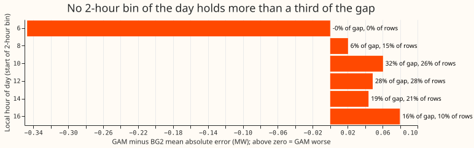
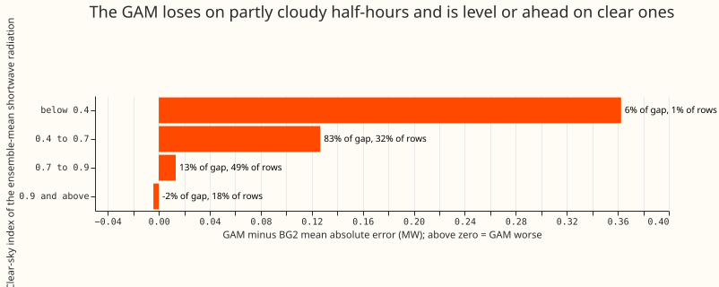
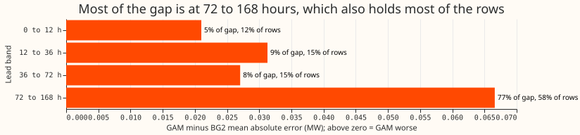
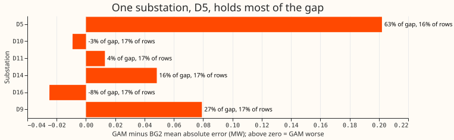
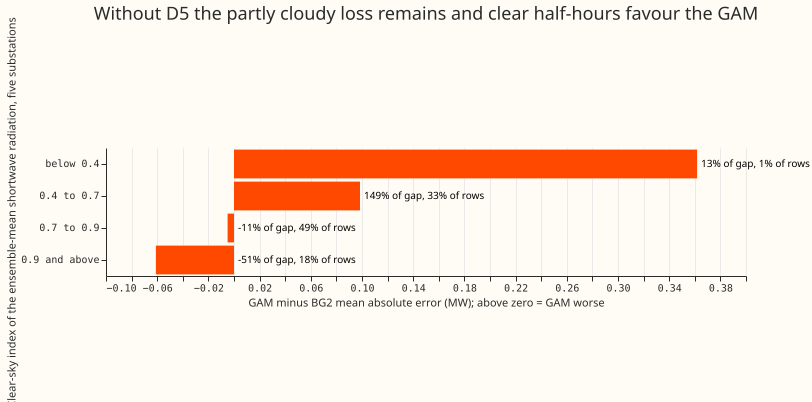

Where does the best GAM lose to the XGBoost model of BG2 on sunny daylight half-hours: which hours, clear-sky bands, leads, or substations?
On sunny daylight half-hours, the best generalised additive model (GAM) has a mean absolute error 0.05 MW higher than BG2. One substation, D5, holds most of that gap. A sunny daylight half-hour is one in the top third of its substation's daylight half-hours, ranked by the output per megawatt of capacity of a fixed south-facing solar fleet driven by CAMS irradiance. BG2 is the second best-guess XGBoost forecast, built in experiment 87. We asked which hour of day, clear-sky band (the ensemble-mean forecast irradiance as a fraction of clear-sky irradiance), lead band (hours between the forecast run and the half-hour), or substation holds the gap. We joined both models' stored forecasts for the scored year on the same substation, daily forecast run, and half-hour, and cut the gap four ways. Without D5, the gap falls to 0.02 MW and its 95% interval, resampled by month, includes zero.
An earlier plot of errors by weather condition gave a gap of 0.13 MW, and we could not reproduce it. The plot's code is not in the repository, so the rows above are our reconstruction. Under this definition the gap is 0.05 MW over all leads, and we do not know whether the plot used different rows. The definition gives 90,143 half-hours over all leads and 13,198 at 12 to 36 hours, against 12,125 in the plot.
The GAM is experiment 164's fix O. It is a convex model fitted by experiment 155 and calibrated
by experiments 160 and 164, the same forecast as arm A of experiment 169. Its median forecast equals
that of experiment 155's arm D on these rows. BG2 is experiment 87's p_s6_bg2. The ranking uses
the unit solar shape of experiment 106's feature cache, the definition experiment 139 uses for its
sunniest third.
Figures





Results
- Rows and scope: six substations (D5, D10, D11, D14, D16, D9), the 291 daily runs of
fold_a_daily_gap_v1that both models forecast, from 2025-07-02 to 2026-06-29, on rows outside the hand-filtered switching events. The plan did not fix the lead range, so the headline uses all leads to 168 hours (chosen after seeing the data). The 12 to 36 hour range, nearest to the plot's row count, is beside it. The "five decision substations" are D5, D10, D11, D14, and D16, the substations of the differentiable-physics series' contrasts; D9 is reported beside them. - Absolute errors (MW), sunny daylight, all leads: mean absolute error 0.590 for the GAM against 0.541 for BG2; pinball loss 0.166 against 0.152.
- Gap (GAM minus BG2 mean absolute error, MW), with month-resampled 95% intervals from 12 monthly blocks:
| Scope | Rows | Gap | Interval | Pinball gap |
|---|---|---|---|---|
| All leads, six substations | 90,143 | +0.050 | +0.014 to +0.079 | +0.0143 |
| All leads, five decision substations | 74,728 | +0.044 | +0.006 to +0.071 | +0.0123 |
| 12 to 36 h, six substations | 13,198 | +0.031 | -0.017 to +0.065 | +0.0083 |
| 12 to 36 h, five decision substations | 10,952 | +0.027 | -0.018 to +0.059 | +0.0072 |
| All leads, D5 only | 14,045 | +0.202 | +0.111 to +0.273 | +0.0519 |
| All leads, without D5 | 76,098 | +0.022 | -0.009 to +0.046 | +0.0073 |
- Verdict against the pre-registered rule:
partly supported. On the headline definition and all leads the rule is met: D5 holds 63% of the gap with 16% of the rows, and the total gap's interval excludes zero. The rule is not met for the 12 to 36 hour range, whose interval includes zero, or when sunny half-hours are ranked by realised clear-sky index (next bullet). The stated prediction also failed: the shoulder hours did not hold 60% to 70% of the gap. - The size of the gap depends on how sunny is defined; D5's loss does not. The audit of this experiment ranked each substation's daylight half-hours three ways (all leads, top third per substation):
| Ranking measure | Half-hours | Total gap | D5 only | Without D5 |
|---|---|---|---|---|
| Unit solar shape (headline) | 87,690 | +0.049 (+0.013 to +0.080) | +0.206 | +0.020 |
| Realised irradiance (CAMS) | 87,701 | +0.055 (+0.018 to +0.083) | +0.219 | +0.024 |
| Realised clear-sky index | 87,684 | +0.015 (-0.024 to +0.049) | +0.118 | -0.004 |
The three rows drop half-hours where the clear-sky irradiance is under 20 W per square metre, so the headline row differs slightly from the 90,143 half-hours above. D5 is worse than BG2 under all three, and the other five substations together are level under the third.
- Cuts (all leads; rule: at least 60% of the gap in a level holding under 40% of the rows):
- Substation: D5 holds 63% of the gap with 16% of the rows. The rule is met.
- Clear-sky band: the 0.4 to 0.7 band holds 83% of the gap with 32% of the rows. The rule is met. In this band the GAM's error is 0.749 MW against BG2's 0.622 MW. In the 0.9 and above band, the GAM's error at the five substations other than D5 is 0.438 MW against BG2's 0.499 MW.
- Hour of day: no 2-hour bin holds more than 32% of the gap (10:00 to 12:00 UK local time), and the two busiest bins hold 26% and 29% of the rows. The rule is not met. The 16:00 to 18:00 bin holds 16% of the gap with 10% of the rows. Without D5, that bin holds 35% of the remaining gap with 10% of the remaining rows.
- Lead band: 72 to 168 hours holds 77% of the gap and 58% of the rows. The rule is not met.
- D5 loses in every band: at every hour from 08:00 to 18:00; in all four lead bands (0 to 12 h 0.572 against 0.387 MW, 12 to 36 h 0.581 against 0.393, 36 to 72 h 0.610 against 0.411, 72 to 168 h 0.704 against 0.494); and in every clear-sky band with more than 100 half-hours (0.873 against 0.590 MW at 0.4 to 0.7, 0.523 against 0.412 at 0.7 to 0.9, 0.602 against 0.304 at 0.9 and above). The gap at 0.9 and above (0.298 MW) is about as large as at 0.4 to 0.7 (0.283 MW), so at D5 the loss is not confined to half-hours with a lower clear-sky index.
- D9 is a second loss site: it holds 27% of the gap with 17% of the rows (0.497 against 0.418 MW), and its loss grows with lead.
- Solar share: D5 has the largest relative fall from the night mean to the sunny-daylight mean (3.44 to 1.14 MW, 67%), which we use as a proxy for its solar share because the fitted capacities can only be read in the GPU environment, which this session does not have. D10 has the next largest relative fall (2.42 to 1.26 MW, 48%) and the GAM beats BG2 at D10 (-0.009 MW), so solar share alone does not explain D5. D9's sunny-daylight mean is not lower than its night mean.
- Ensemble clear-sky index on the sunny rows: the median is 0.77, and the 5th to 95th percentile range is 0.52 to 0.98.
Checks
- Mean versus median forecast: not computable for BG2, which stores no mean. The GAM's stored mean equals its median in the files of experiment 164, so the median is used for both models.
- Mean-forecast error beside the quantile score: the mean absolute error of the median forecast and the pinball loss point the same way in every row of the results table and in every hour bin.
- Audit conditions met: two of the
ml-experimentskill's audit conditions apply. Leaving out one substation changes a verdict: without D5, the all-leads gap's interval includes zero. The result also contradicts the experiment's own prediction, because the shoulder hours did not hold 60% to 70% of the gap. One Opus audit re-derived the conversion, the join, and the gaps from the stored files and reproduced every number. It found that the size of the gap depends on the ranking measure, which the page now reports and which lowered the verdict fromsupported.
Caveats
- The row set is our reconstruction. The plot's mean absolute error (0.58 against 0.45 MW) is not reproduced: the same definition gives 0.59 against 0.54 over all leads and 0.52 against 0.49 at 12 to 36 hours. An exploratory check that defined sunny days by the realised daily clear-sky index (top third of days) also gave almost no gap (0.44 against 0.45 MW at five substations, 12 to 36 hours, 11,670 half-hours). That daily check is not in the script.
- Level shares are descriptive. Only the totals carry month-resampled intervals, and 12 monthly blocks make those intervals coarse.
- The plot's 12,125 half-hours are close to our 13,198 at 12 to 36 hours, and not to our 90,143 over all leads. At 12 to 36 hours the total gap's interval includes zero.
What to try next
- Check the solar shape of D5 and D9 (orientation, tilt, and fitted capacity) against D10, where the GAM does well.
- Ask for the by-condition plot's row definition and the models it scored, so the 0.13 MW gap can be reproduced before another experiment is built on it.
- A small neural component looks worth testing, after the cheap shape check above. D5 loses to BG2 in every hour, lead band, and clear-sky band, which points at the fixed south-facing solar shape more than at the irradiance forecast. A learned smooth response from irradiance and solar elevation to solar output, fitted per substation inside the GAM, could replace that shape. The convex GAM stays as the comparison arm. The prediction that can fail: the learned response cuts D5's all-lead gap to BG2 from +0.20 MW to +0.10 MW or less, and raises the error at D10 and D16 (where the GAM already beats BG2) by less than 0.02 MW. If D5's gap stays above +0.15 MW, the cause is not the solar shape.